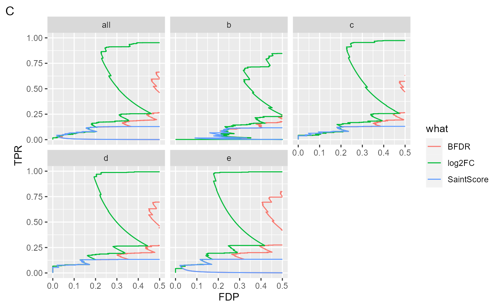

Benchmarking SaintExpress
Witold Wolski
12/2/2021
Source:../vignettes/Benchmark_SaintExpress.Rmd
Benchmark_SaintExpress.RmdImporting MQ data into proLFQua
First read data and annotation.
library(prolfqua)
library(tidyverse)
datadir <- file.path(find.package("prolfquaData") , "quantdata")
inputMQfile <- file.path(datadir,
"MAXQuant_IonStar2018_PXD003881.zip")
data <- tidyMQ_Peptides(inputMQfile)
inputAnnotation <- file.path(datadir, "annotation_Ionstar2018_PXD003881.xlsx")
annotation <- readxl::read_xlsx(inputAnnotation)Create proLFQua configruation for MQ peptide.txt file and annotate data.
config <- prolfqua::create_config_MQ_peptide()
res <- add_annotation(
data,
annotation,
fileName = "raw.file"
)
config$table$factors[["dilution."]] = "sample"
config$table$factors[["run_Id"]] = "run_ID"
config$table$factorDepth <- 1
data <- setup_analysis(res, config)Setup LFQData class, filter, transform and aggregate peptide intensities: - remove proteins with only one peptide identified (filter_proteins_by_peptide_count). - remove small (zero) intensities (remove_small_intensities) - log2 transform and scale intensities (get_Transformer) - aggregate peptides to proteins (get_Aggregator)
lfqdata <- LFQData$new(data,config)
lfqdata$data <- lfqdata$data %>% filter(!grepl("^REV__|^CON__", protein_Id))
lfqdata$filter_proteins_by_peptide_count()
lfqdata$hierarchy_counts()## # A tibble: 1 x 3
## isotope protein_Id peptide_Id
## <chr> <int> <int>
## 1 light 4191 31414
lfqdata$remove_small_intensities()
tr <- lfqdata$get_Transformer()
subset_h <- lfqdata$get_copy()
subset_h$data <- subset_h$data %>% dplyr::filter(grepl("HUMAN", protein_Id))
subset_h <- subset_h$get_Transformer()$log2()$lfq
lfqdataNormalized <- tr$log2()$robscale_subset(lfqsubset = subset_h)$lfq
lfqAggMedpol <- lfqdataNormalized$get_Aggregator()
lfqAggMedpol$medpolish()
lfqtrans <- lfqAggMedpol$lfq_aggPrepare protein data for SaintExpress analysis and run SaintExpress
SeintExpress requires specifying a control condition. As control C we will use the samples with the lowest E-Coli spike in concentration (dilution a). Treatments T are samples with higher concentrations (dilution ‘b’, ‘c’, ‘d’, ‘e’).
- The code snipped below specifies control and treatment samples using
case_when. - adds protein lengths (
readPeptideFasta,addProteinLengths). - Creates SaintExpress compatible inputs (
protein_2localSaint). - run saintExpress (
runSaint)
exampleDat <- lfqtrans$data %>% dplyr::mutate(CorT = case_when(dilution. == "a" ~ "C", TRUE ~ "T"))
exampleDat$protein_Id <- gsub("~.*","", exampleDat$protein_Id)
# sample protein lengths
Ecolifasta <- system.file("fastaDBs/uniprot-proteome_UP000000625_reviewed_yes.fasta.gz",package = "prolfquaData")
Humanfasta <- system.file("fastaDBs/uniprot-proteome_UP000005640_reviewed_yes.fasta.gz",package = "prolfquaData")
Ecolifasta <- prozor::readPeptideFasta(Ecolifasta)
Humanfasta <- prozor::readPeptideFasta(Humanfasta)
fasta <- c(Ecolifasta, Humanfasta)
exampleDat <- prolfqua::addProteinLengths(exampleDat, fasta)
res <- protein_2localSaint(exampleDat,quantcolumn = "medpolish",
proteinID = "protein_Id",
proteinLength = "protein.length",
IP_name = "raw.file",
baitCol = "dilution.",
CorTCol = "CorT"
)
stopifnot(names(res) == c( "inter", "prey", "bait"))
resSaint <- runSaint(res,filedir = tempdir())## Input files are: C:\Users\wolski\AppData\Local\Temp\RtmpUTNXS9/inter.txt, C:\Users\wolski\AppData\Local\Temp\RtmpUTNXS9/prey.txt, C:\Users\wolski\AppData\Local\Temp\RtmpUTNXS9/bait.txt
## Interaction file: "C:\Users\wolski\AppData\Local\Temp\RtmpUTNXS9/inter.txt"
## Prey file: "C:\Users\wolski\AppData\Local\Temp\RtmpUTNXS9/prey.txt"
## Bait file: "C:\Users\wolski\AppData\Local\Temp\RtmpUTNXS9/bait.txt"
## GO file: ""
## Parsing prey file C:\Users\wolski\AppData\Local\Temp\RtmpUTNXS9/prey.txt ...done.
## Parsing prey file C:\Users\wolski\AppData\Local\Temp\RtmpUTNXS9/bait.txt ...done.
## Parsing interaction file C:\Users\wolski\AppData\Local\Temp\RtmpUTNXS9/inter.txt ...done.
## Setting matrix indices for each interaction...done.
## Creating matrix...done.
## Creating a list of unique interactions...done.
names(resSaint)## [1] "listFile" "list" "out"
ctr <- prolfqua::ContrastsSaintExpress$new(resSaint$list)
pl <- ctr$get_Plotter()
pl$score_plot()$SaintScoreScatter plot showing the dependence of the SaintScore on the log2FC.
pl$histogram()## $BFDRScatter plot showing the dependence of the SaintScore on the log2FC.
##
## $SaintScoreScatter plot showing the dependence of the SaintScore on the log2FC.
Benchmarking
We benchmark SaintExpress using the Ionstar dataset. We are using here the lowest ECOLI spike in concentration as control.
bb <- ctr$get_contrasts()
bb <- mutate(bb , PEP = 1-SaintScore)
ttd <- prolfqua::ionstar_bench_preprocess( bb , idcol = "Prey" )
benchmark_SaintExpres <- make_benchmark(ttd$data,
contrast = "Bait",
fcestimate = "log2FC",
toscale = NULL,
benchmark = list(
list(sc = "log2FC", desc = TRUE),
list(sc = "SaintScore", desc = TRUE),
list(sc = "BFDR", desc = FALSE)
),
model_description = "SaintExpress_medpolishInt",
model_name = "SaintExpress_medpolishInt",
FDRvsFDP = list(list(sc = "BFDR", desc = FALSE))
, hierarchy = c("Prey"), summarizeNA = "SaintScore"
)
colnames(ttd$data)## [1] "Prey" "modelName" "Bait" "c1_name" "c2_name"
## [6] "c1" "c2" "log2FC" "SaintScore" "BFDR"
## [11] "PEP" "species" "TP"
sum(benchmark_SaintExpres$smc$summary$Prey)## [1] 4178
sumarry <- benchmark_SaintExpres$smc$summary
table_facade(sumarry, caption = "nr of proteins with 0, 1, 2, 3 missing contrasts.")| nr_missing | Prey |
|---|---|
| 0 | 4090 |
| 1 | 58 |
| 2 | 17 |
| 3 | 13 |
res <- benchmark_SaintExpres$pAUC_summaries()
knitr::kable(res$ftable$content,caption = res$ftable$caption)| Bait | what | AUC | pAUC_10 | pAUC_20 |
|---|---|---|---|---|
| all | BFDR | 86.15768 | 28.32065 | 49.99378 |
| all | log2FC | 94.20630 | 61.59275 | 78.36264 |
| all | SaintScore | 79.54684 | 12.59535 | 19.46225 |
| b | BFDR | 82.51844 | 23.92168 | 42.65144 |
| b | log2FC | 89.11407 | 45.15869 | 64.37913 |
| b | SaintScore | 79.27993 | 11.27298 | 18.16956 |
| c | BFDR | 85.70884 | 27.28606 | 48.92935 |
| c | log2FC | 94.17571 | 61.54293 | 79.33860 |
| c | SaintScore | 79.45446 | 12.71742 | 19.19783 |
| d | BFDR | 87.50839 | 29.38040 | 52.33761 |
| d | log2FC | 96.35791 | 67.69971 | 83.51881 |
| d | SaintScore | 79.61282 | 13.06841 | 19.83869 |
| e | BFDR | 88.71333 | 32.76426 | 55.83592 |
| e | log2FC | 96.68319 | 71.21882 | 85.32532 |
| e | SaintScore | 79.74878 | 13.21157 | 20.40854 |
res$barpROC curves
#res$ftable
benchmark_SaintExpres$plot_ROC(xlim = 0.2)
plot ROC curves
benchmark_SaintExpres$plot_FDRvsFDP()plot FDR vs FDP
benchmark_SaintExpres$plot_FDPvsTPR()
Conclusions
There are several problems with the results produced by SaintExpress:
- First, the fold changes reported, have no relation with the true fold change (see volcano plots)
- Secondly, the score with the highest performance (largest pAUC) is the \(\log_2(FC)\). However, since the SaintScore also model the observed variances we would expect to perform better.
- Third, the performance of SaintExpress is significantly worse when compared with other algorithms, e.g. limma or PRORA implemented in prolfqua or proDA (see other benchmark vignettes).
Saint Express BFDR.
SaintExpress infers several statistics. - the SaintScore - Saint Probability, vaguely - probability that the protein is a true interactor. - the BFDR Bayesian FDR.
The following article [http://varianceexplained.org/r/bayesian_fdr_baseball/] describes how the BFDR can be derived from the posterior error probability (PEP). The BFDR equals the cumulative mean of the PEP.
SaintExpress does not report the PEP. But if the SaintScore is the probability that a protein is an interactor then, \(1 - SaintScore\) can be interpreted as posterior error probability (that it is not an interactor) and hence we can compute the BFDR:
computeFDR <- function(mdata ){
mdata <- dplyr::mutate(mdata, PEP = 1 - SaintScore)
mdata <- mdata %>% arrange(PEP)
mdata <- mdata %>% mutate( myFDR = cummean(PEP))
return(mdata)
}There are two options, either to determine the BFDR for all Baits (first code snipped) or for each Bait (second one with the for loop).
reslist <- resSaint$list
reslist <- computeFDR(reslist)
ggplot(reslist, aes(x = BFDR, y = myFDR)) + geom_point() + geom_abline(slope = 1,color = "red")
BFDR vs myFDR for all Baits.
ad <- list()
for(i in unique(reslist$Bait)){
print(i)
set <- filter(reslist, Bait == i)
ad[[i]] <- computeFDR(set)
}## [1] "b"
## [1] "e"
## [1] "d"
## [1] "c"
ad <- bind_rows(ad)
ggplot(ad, aes(x = BFDR, y = myFDR)) + geom_point() + facet_wrap(~Bait) + ggplot2::geom_abline(slope = 1,colour = 2)BFDR vs myFDR for each Bait.
The SE BFDR is quite similar to the FDR we estimated from the SaintScore. It also seems that SaintExpress computes the BFDR for all Baits not for each.